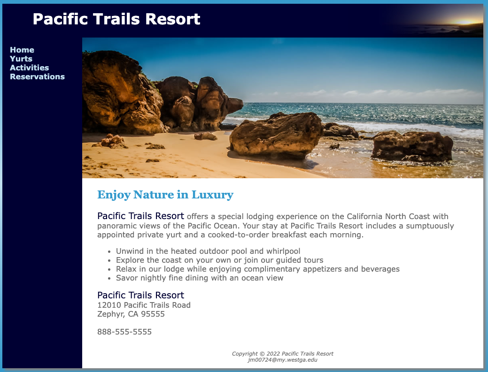
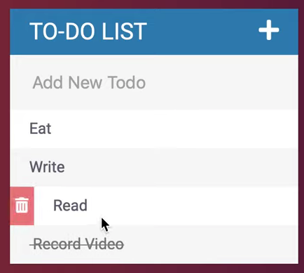
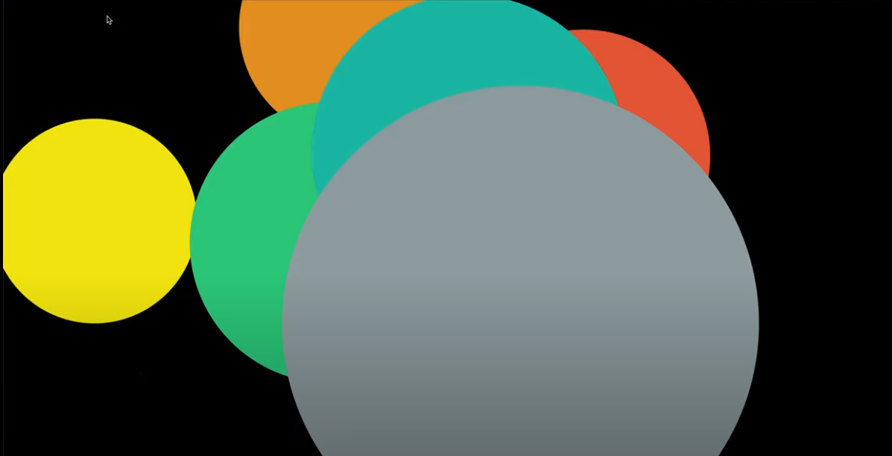

Projects
- Pacific Trails Resort
- Website built using HTML and CSS which allows users to review information for the Pacific Trails Resort and submit a contact form requesting registration. View Pacific Trails Resort Repo on Github.
- To-Do List App
- Web app built using HTML, CSS, and JavaScript. Users can add items, delete items and check items off their to-do list. View To-Do List App on Github.
- Patatap
- Responsvie website built with HTML, CSS, and JavaScript which provides the user with a fun interface way to generate circles that appear on the screen and generate sounds using keys on their keyboard. View Patatap on Github.



Here's what I've worked with ...
| Front-End | Back-End | Tools & Technologies |
|---|---|---|
| HTML | Java | Visual Studio Code |
| CSS | JSON | SQL Server Management Studio |
| Bootstrap 4 | XML | MongoDB |
| Semantic UI | SQL | Express for Node.js |
| JavaScript | SOSQL | Git Version Control |
| jQuery | Python | MDN Web Docs |
| Node.js | C# | MDN Web Docs |
| PHP | Apache Freemarker | RESTful Routing |
| APEX | Heroku | |
| WordPress | ||
| Linux | ||
| Postman |